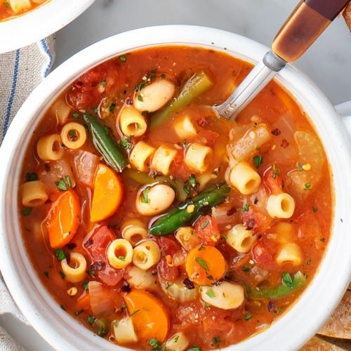

Minestrone Soup

So delicious. You will love it!
Minestrone is a hearty, traditional Italian soup typically made with beans, pasta and lots of vegetables. Enjoy the slow-cooked flavor in just about 30 minutes.
Ingredients
- 1 tablespoon olive oil
- 1 cup diced onion
- 3/4 cup diced carrot
- 3/4 cup diced celery
- 1 teaspoon minced garlic
- 1 1/2 teaspoons minced fresh rosemary
- 1 (15 ounce) can Contadina® Tomato Sauce
- 1 (15 ounce) can cannellini beans, rinsed and drained
- 2 cups College Inn® Chicken Broth
- 1 cup diced zucchini
- ½ cup dry ditalini pasta
- ¼ teaspoon black pepper
- ¼ cup chopped fresh Italian parsley
- 1 teaspoon Shredded Parmesan cheese
Directions
- Heat olive oil in a large saucepan or Dutch oven over medium-high heat. Cook onion, carrot, celery, garlic and rosemary until vegetables begin to soften, about 5 minutes.
- Stir in tomato sauce, beans and 2 1/2 cups water. Add broth, zucchini, pasta and pepper; bring to a simmer. Cook, uncovered, 10 minutes or until pasta is tender, stirring occasionally. Stir in parsley. Serve topped with Parmesan cheese and additional parsley, if desired.
Back to main page